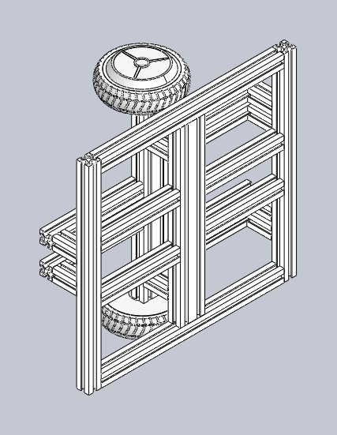
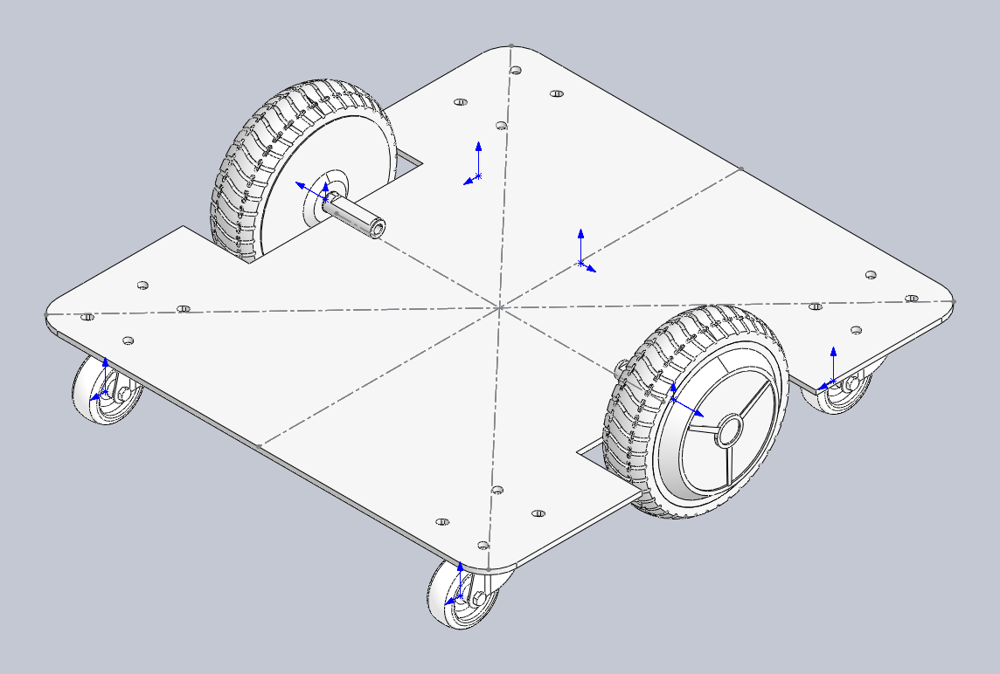
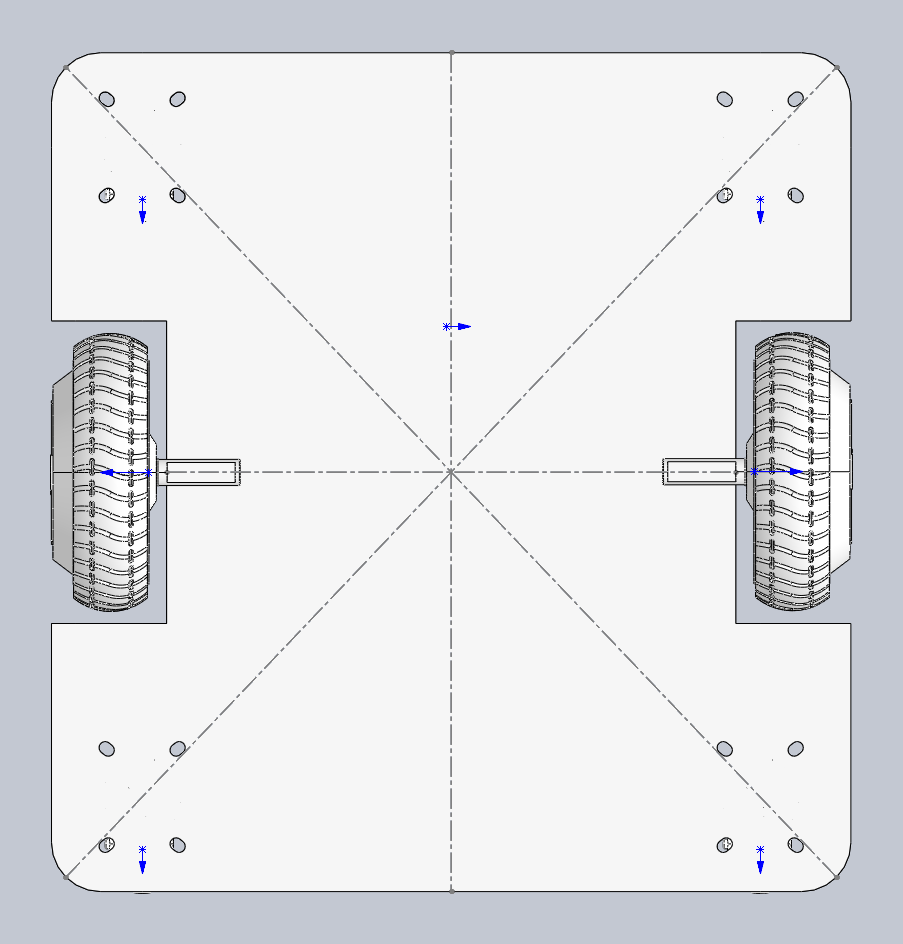

1. 真实地图
使用 ljh20260516.pcd 投影为 2D occupancy map，并通过降噪流程保留通道结构。
Main Platform / Real AMR
自建轮毂伺服 AMR：机械 V5.1 到 V5.2，接入 ROS 2 / Nav2 / Web 控制台
这不是只在屏幕里跑的导航 demo，而是一台从底盘 CAD、型材/底板结构、轮毂电机、传感器安装，到 ROS 2 工作空间、PCD 地图、覆盖路径、Web 3D 控制台和底盘安全链都能互相对上的真实 AMR 平台。
At A Glance
机械真实迭代 V5.1 是型材框架试制版，V5.2 收敛为低矮底板式底盘；两版都保留 SolidWorks 装配证据。
0.486 x 0.450 m AMR2 实际车体 footprint 进入覆盖规划、地图裁剪、避障膨胀和 RViz/Web 视觉验证。
PCD 到可走路径
从真实 ljh20260516.pcd 转二维栅格地图，再做 5 条主通道覆盖路径。
安全链闭合 Nav2 输出继续经过速度平滑、碰撞监测和激光安全过滤，再到 DS20270C CAN。
Mechanical Iteration
我把本地两套 SolidWorks 装配体都打开导出了预览：V5.1 更像早期型材验证车，重点是把轮毂电机、3030/3060 框架和安装空间跑通；V5.2 则明显转向低重心、平板化、孔位规则化的 AMR 底盘，更适合后续外壳、电控板和传感器模块继续叠加。


| 版本 | 本地 CAD 证据 | 结构重点 | 适合对外表达的价值 |
|---|---|---|---|
| V5.1 第一版 | 1 个 SLDASM、24 个 SLDPRT、1 个 STEP；材料记录含 3030/3060 型材和 70 个角码。 | 用 486 mm、450 mm、225 mm、195 mm 等型材段搭出框架，先验证轮毂电机固定和整体空间。 | 说明项目不是只买成品底盘，而是从机械装配、采购清单和结构打样开始推进。 |
| V5.2 第二版 | 1 个 SLDASM、2 个 SLDPRT；SolidWorks 预览已导出等轴测和俯视图。 | 从开放框架收敛到一体化底板，轮毂轮与脚轮位置更清楚，孔位更利于安装电控和传感器。 | 说明底盘已经进入更接近真车执行平台的形态，可以承接 Nav2、Web 控制台和 VLN waypoint 实验。 |
Visual Evidence



System Chain
使用 ljh20260516.pcd 投影为 2D occupancy map，并通过降噪流程保留通道结构。
ljh_robot_coverage 接收 Rect/Poly 区域，结合 footprint、known-free 裁剪和 A* 连接生成路径。
Web 控制台通过 rosbridge 同步地图、路径和 /Odometry；RViz 用于对照真实 ROS 状态。
覆盖路径可转换为 FollowWaypoints 或 NavigateToPose，默认 dry-run，不自动发车。
速度链路保持 /cmd_vel_nav -> smoother -> collision_monitor -> /cmd_vel_safe -> DS20270C。
ROS2 Web Console
ljh_robot_ros2_web 把地图、机器人位姿、目标点、路径结果和任务状态放进浏览器里。它不是绕开 ROS 的独立前端，而是通过 rosbridge 把 Web 操作和 RViz/ROS 状态连起来，方便现场快速判断“机器人在哪里、目标在哪里、路径是否可信”。


/coverage_path，离车验证路径跟随。What I Built
把 SolidWorks 底盘转为 STL mesh，并在 RViz/Web 中和 0.486 x 0.450 m 规划 footprint 对齐。
把覆盖规划从单脚本推进到 ROS 2 服务、消息、RViz 交互工具和可复用路径输出。
按 DS20270C 双轮差速底盘适配 Hybrid-A*、MPPI、速度平滑和最后一层激光安全门。
让浏览器读取地图、CAD、导航和覆盖参数，作为实验现场比终端日志更直观的控制台。
Verification
| 验证对象 | 结果 | 说明 |
|---|---|---|
| SolidWorks 预览导出 | PASS | V5.1 / V5.2 装配体均能通过 SolidWorks COM 打开，并导出非空等轴测和俯视图。 |
| 真实 CAD mesh 接入 | PASS | 工程记录中已验证从 AMR_v1.0 装配体导出 26 个 STL 组件，ROS visual extents 约 0.510 x 0.552 x 0.210 m。 |
| 覆盖仿真服务 | PASS | 主地图 5 通道、clicked polygon、fake car follower 和 Nav2 dry-run 均保留验证记录。 |
| Nav2 / 安全门配置 | PASS / gated | Hybrid-A*、MPPI DiffDrive、collision monitor、/cmd_vel_safe 和 0x602 dry-run 已接入；完整真车运动仍需现场急停和人工安全门。 |
| 公开展示边界 | Scoped | 页面只展示公开截图、CAD 预览和工程摘要，不公开原始 PCD、内部日志、现场私有配置或本地绝对路径。 |
System Value
AMR2 的价值在于它把很多容易分散的能力接成一条可复查的工程链：机械模型不是孤立文件，能进入仿真；地图不是截图，能进入覆盖规划；Web 不是展示壳，能和 ROS 状态对齐；底盘驱动不是直接吃危险速度，而是放在 Nav2 和安全门之后。